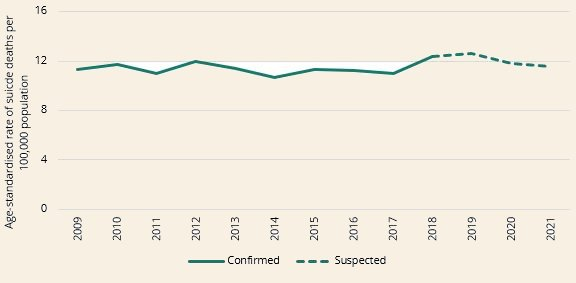

Every 40 seconds, someone takes their own life (Ghebreyesus, 2019). But what if AI could change this statistic? Suicide rates are rising globally, with more than 800,000 people dying by suicide every year (refer to figure 2 for rates). This is a significant threat to people, as suicide leaves a damaging impact on society. AI offers new ways to detect suicide risks, such as wearable devices, social media and mobile apps that analyse this data (Bernert, 2020). This can be done through AI tools such as machine learning (ML) and natural language processing (NLP) (Berrouiguet, 2019). Machine learning is a subset of AI that enables computers to ‘learn’ from data, imitating the way that humans learn. NPL is a subfield of AI that uses machine learning to allow computers to communicate to humans. (Holdsworth, 2024). These tools are used to look through data to create algorithms and visualize the results on suicide rates (Fonseka, 2019). This website will explore how AI is transforming suicide by identifying at-risk individuals, before it is too late.
AI offers hopeful opportunities in suicide prevention, by giving services such as real time support and personalised interventions. Tools such as chatbots, social media monitoring systems and predictive algorithms exhibit the potential to detect suicide risk faster and more accurately than medical experts. These technologies can improve effectiveness in mental health services, reduce guilt-free interactions, and allow for early intervention. However, this is followed by ethical challenges related to privacy, consent and transparency. The tools should establish a safe and trustworthy connection with the users, ensuring clear communication, responsible data practices and robust security measures. Facebook and Google have started to include these AI-driven systems in their platforms to identify at risk individuals. Nevertheless, there is limited evidence that supports the effectiveness of these systems. To provide safe resources to the user, more research needs to be conducted. For these tools to be implemented safely, there is needs to be clear policies set in place.
Using AI as conversational agents we can provide individuals with real time support, when human resources are less available. AI has also been found to detect possible suicide cases faster and with more accuracy than medical experts. Chatbots, social media and medical prediction tools have been used to achieve this purpose. This machinery, alongside the use of human resources have the capacity to improve overall efficiency (Miller DD, 2018). Furthermore, AI has been used to diagnose individuals and aid in daily monitoring of patients. The opportunities are plentiful, like real time personalisation and support, having guilt-free conversations and early intervention. In short, the use of AI shows clear advantages and benefits when it comes to prevent suicide (Bernert RA, 2020).

Fig 2: It illustrates age-standardise rate of suicide deaths per 100,000 population
With any new technology there are risks that come with. Using AI in mental health increases ethical problems that are connected to privacy, consent and transparency (Farhud, 2021). Another issue would be relating to the security AI brings, with things such as suicide prevention and algorithmic bias we need to consider to ensure responsibility of AI (Alowais et al. 2023). Considering these risks, there also needs to be proper communication between the companies and the patients. This fosters trust and it allows the users to make decisions leading to their lives being protected. By ensuring that consent has been given by the individual, the companies using AI can ensure that the users privacy is protected (Cohen, 2019). Companies such as Facebook, Google and even Apple have begun to execute in their apps and apply this to identify users that could be at risk (Lustgarten, 2021). However, with this recent emerging technology, there is not a lot of evidence provided about the usefulness and effectiveness of implementation in the healthcare field.
In this field, AI can be used to navigate information and check through different habits from social media that are able to detect the risk of suicide, and they would be able to see their habits. Tools like AI are being evolved in research related to this field and are being developed by private technology companies. However, it is important that we use these tools responsibly and with a clear set of guidelines in place, so individuals can use them. AI needs to be used to support mental health interventions while respecting privacy, avoiding bias, and ensuring human oversight in decision making.
Through this research and the answers given do propose the likelihood to increase suicide prevention using AI, the non-communication from big companies and the ethical implications show us the current difficulties given for Suicide prevention with the use of AI.